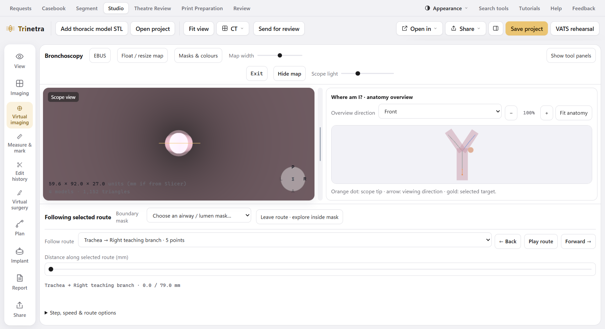
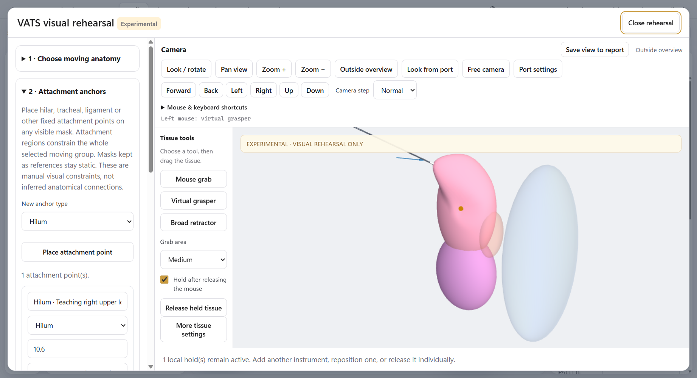

Bronchoscopy & EBUS
Make named routes, travel slowly, choose branches, use the map and explore inside a mask.

Simple, illustrated lessons for Bronchoscopy, EBUS planning and VATS rehearsal. Start with the basics, then choose the task you need.
Make named routes, travel slowly, choose branches, use the map and explore inside a mask.

Choose moving anatomy, place attachments, use graspers and compare a port view.

Pictures use invented training shapes in the actual light-mode application. They explain the controls; they are not patient anatomy. No case files or patient data are used by this guide.
Where to find it